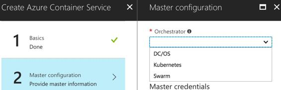

CI/CD for Azure container service (Docker containers)
Microsoft offers a managed Docker container service, Azure Container Service (AKS), using which customers can easily deploy scalable, open source APIs-based container deployed applications. The most important aspect that AKS provides is the orchestration and placement-related aspects for the containers, so that the end users can focus on their core applications rather than having to worry about launching and scaling applications manually. For the orchestration aspects, AKS offers a few options, such as Docker, Swarm, Kubernetes, and Mesosphere DC/OS, which are shown in the following screenshot:

Another important aspect for any managed container platform is the functionality of a container registry where you can store master copies of different container images based on application stacks and configuration. For this, Azure offers Azure Container Registry (ACR), which is private registry for you to tag and upload images there.
Container-based applications often need to access and persist data in an external data volume. Azure files can be used as this external data store. Refer to the following link for more details: https://docs.microsoft.com/en-us/azure/aks/azure-files.
Now, in order to enable CI/CD practices with the Azure Container Service, the steps are very similar to the ones described in the previous section around enabling CI/CD for Azure functions. At a high level, the following are the key steps and the flow to enable these practices:
As part of the preceding process, multiple customizations can be performed, like being able to run particular types of tests or integration with other systems, which can be again easily managed using VSTS-based CI/CD pipelines.
The Kubernetes extension for VSTS is available on the Visual Studio Marketplace: https://marketplace.visualstudio.com/items?itemName=tsuyoshiushio.k8s-endpoint.